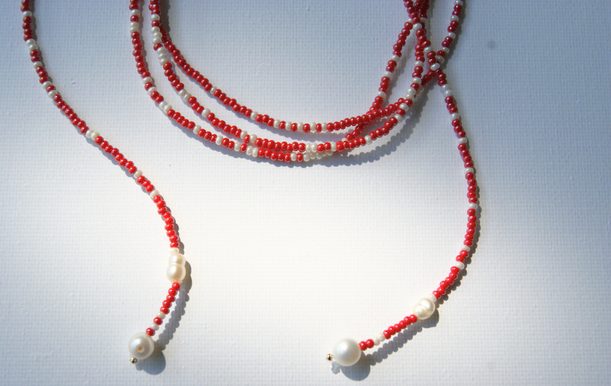

BLUEBERRY
Brand Development & Visual Communication
PROJECT SCOPE
BUILDING A DISTINCTIVE IDENTITY
Blueberry explora cómo una dirección creativa clara puede definir la forma en que una marca se presenta y conecta con su audiencia. El proyecto se centra en desarrollar un lenguaje visual y un estilo de comunicación coherentes con su personalidad, creando una experiencia reconocible en los diferentes puntos de contacto.
Al conectar las decisiones visuales con el concepto central de la marca, el proyecto destaca la importancia de la consistencia y el pensamiento creativo en la construcción de una identidad diferenciada. La intención es que cada elemento de comunicación contribuya a expresar una personalidad propia y reconocible.
DELIVERABLES & ASSETS
